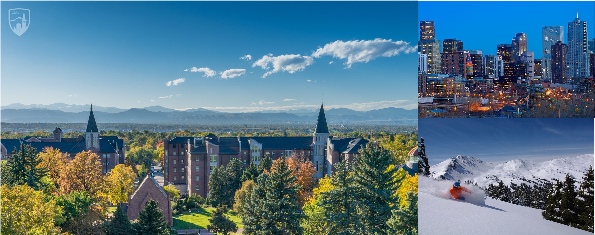

|
Currently, the openings include: PhD students, masters, visiting scholars. If you are interested in data science, machine learning, signal processing, and optimization research, please feel free to contact me.
Lab Mission
The Data, Computation and Learning Lab is newly established by Dr. Zhihui Zhu in 2020 in the Ritchie School of Engineering and Computer Science at the University of Denver. Our research spans a wide range of areas in the fields of data science, machine learning, signal processing, and computational optimization. In particular, we are interested in developing computational methods that can efficiently and reliably extract meaningful representations from large-scale and high-dimensional signals and data. The applications include biomedical engineering, computational imaging, geophysics and remote sensing, etc. Some of the work has been published in top machine learning conferences such as NeurIPS, ICML and ICLR, and top-tiers journals in IEEE Trans. and SIAM, etc. A few current projects include
Machine learning: generalization properties and implicit regularization; model (neural network) compression; federated learning; deep neural networks for unsupervised learning and inverse problems;
Data/signal processing: low-dimensional data representations such as sparsity, low-rank structure, and manifold to perform practical signal and data processing tasks;
Optimization: Nonconvex geometric analysis; distributed optimization; the design, analysis, and implementation of large-scale optimization algorithms for engineering problems.
Some of these projects are in collaboration with CSM, JHU, NYU, UC Berkeley, Microsoft, etc.
Candidate Preference
The Ph.D. students are expected to involve in one or two research directions listed above. Candidates with the following backgrounds are preferred.
Highly self-motivated
BS or above degrees in Electrical Engineering, Computer Science, Math or other related fields, and strong motivation towards high quality research in data science, signal processing, or machine learning
Skilled in one programing language: python, matlab or C
Excellent English in reading, writing and speaking
Apply
If you are interested in joining my lab, please send your CV, transcripts, and any demonstration materials, such as papers or drafts to Dr. Zhihui Zhu (zhihui.zhu@du.edu) with subject “[PhD application]”. Thanks!
|
 |
About Denver
The University of Denver (DU), ranked 87 in 2018 and 96 in 2019 according to U.S. News, is the oldest private university in the Rocky Mountain region, enrolls about 11,600 students in its undergraduate, graduate and professional programs.
Denver, the capital of the U.S. state of Colorado, is one of the best cities to live in America: ranked 1st in 2018 and 2nd in 2019 the best city in American, according to U.S. News & World Report.
|
|